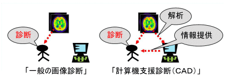

多次元医用画像の知的診断支援プロジェクト：ＣＡＤって何？
ＣＡＤとは、医用画像をコンピュータを用いて分析し、その結果を参考にしながら行う医師による診断のことを表します。このように、医師の視覚的評価にコンピュータによる定量評価を加えることで高い精度で診断を行うことができるようになります。現在、様々な疾患（例：肺がん、乳がんなど）がＣＡＤの対象となっており、中には有用なソフトウェアが開発され実用化されているものもあります。
|  |
| fig1:CADって何？ |
当研究室で行っていること
当研究室では、近年患者が増加しＣＡＤ実現の需要が高い疾患 の１つである”痴呆性疾患”を対象としたＣＡＤを実現させるためのアルゴリズムとソフトウェアの開発を行っています。（本研究は文科省の科学研究費に採択されています。）
痴呆性疾患のＣＡＤを実現するには？
痴呆性疾患の画像診断は、脳血流ＳＰＥＣＴ画像を用いて血流量低下部位を判断することで行うことが多いです。しかし、初期の段階では血流低下量が微妙で見落としてしまうことがあります。そこで、ＳＰＥＣＴ画像から血流低下部位の検出を正確に行え、結果を医師へわかりやすく表示することができるアルゴリズムとソフトウェアの開発が必要となってきます。
開発したアルゴリズム
当研究室では、正確にかつ簡単にＳＰＥＣＴ画像から血流量低下部位を検出するために、図２で示すアルゴリズムを開発しました。簡単に説明すると、まず同一患者のMRI画像より患者の正常時のSPECT画像をシミュレーションしたTemplateを作成します。次に、TemplateとSPECT画像の位置合わせを行い２つの画像の座標位置のずれを補正し、最後に２つの画像の差分を取り血流低下量の分布画像であるDSI(Deterioration Score Image)画像を作成します。このＤＳＩ画像を用いることにより、医師が各ピクセルにおける血流低下量を評価することができるようになります。
| fig2：開発したアルゴリズムの流れ |
表示方法
| ＤＳＩ画像をＭＲＩ画像上へ表示させることで、血流低下部位の詳しい解剖学的位置を把握することができるようになります。 | |
| fig3:ＭＲＩ画像上への表示 |
| ＤＳＩ画像を各方向から脳の表面上へ表示します。血流低下量の３次元的な分布を見る事ができるようになります。現段階では、左右の側面、上下、前後の６方向からの脳表画像を見ることができます。 | |
| fig4:脳の表面へ表示 |
PET/SPECTにおける画像再構成と病変検出の統合
核医学画像診断技術であるPET/SPECTは、統計的画像再構成法の導入により画質が改善されましたが、観測データのみを利用した最尤推定に基づく従来手法では画質改善に限界があります。本研究では、PET/SPECT画像を「正常画像」と「病変画像」の和として表現する複合画像モデルを利用した、最大事後確率推定に基づく新しい画像再構成法を開発し、画質や病変検出能を大幅に改善することを目的とします。具体的には、正常・病変画像の各々の性質に応じた先験情報を利用することにより、正常画像はノイズを抑制し、病変画像はコントラストを保存し、病変検出能を高める、という従来手法では不可能な画質のコントロールが可能になります。さらに、提案手法は正常画像と病変画像を独立に生成するため、「画像再構成（イメージング）と病変検出（計算機支援診断）の統合」という革新的な概念を実現します。
PET/SPECTとは？
放射線計測に基づく医用画像診断技術であり、生体に投与した放射性薬剤の分布を断層画像として再生します。生体から放射されたγ線の計数ヒストグラムが観測データであり、代謝や血流といった生体の機能を定量的に可視化することができ、がんや認知症の早期診断に有効とされています。
本研究のゴール
システム誤差や統計誤差により大きく劣化した観測データから、ノイズが少なく、かつ、診断のターゲットとなる微小構造や異常領域を高精度に保存した高分解能な薬剤分布画像を生成する画像再構成アルゴリズムの開発を行います。
放射線型CTイメージングが直面する問題
画像再構成において、観測データの確率モデルのみを仮定した統計的アルゴリズム(最尤推定；ＭＬ)が広く普及しているのが現状です。そこで問題となるのが、1. 薬剤投与量や測定時間の制約から観測データの計数値が不十分 ⇒ 画像のノイズが非常に大きい 2. 装置(放射線検出器)自体の空間分解能が数ミリ程度と低い ⇒ 画像の空間分解能が非常に低い といった問題があります。
問題解決のためのアプローチ：要素別適応画像再構成
複雑な薬剤分布画像を、先験的な仮定がうまく当てはまるような単純な画像要素に分解し、各画像要素に無理のない適切な仮定を設けることで仮定と実際の間のミスマッチを小さくします。
シミュレーション実験の結果：てんかｎ部位の高精度な検出
Copyright © 2005 Image Science Lab. All rights Reserved.